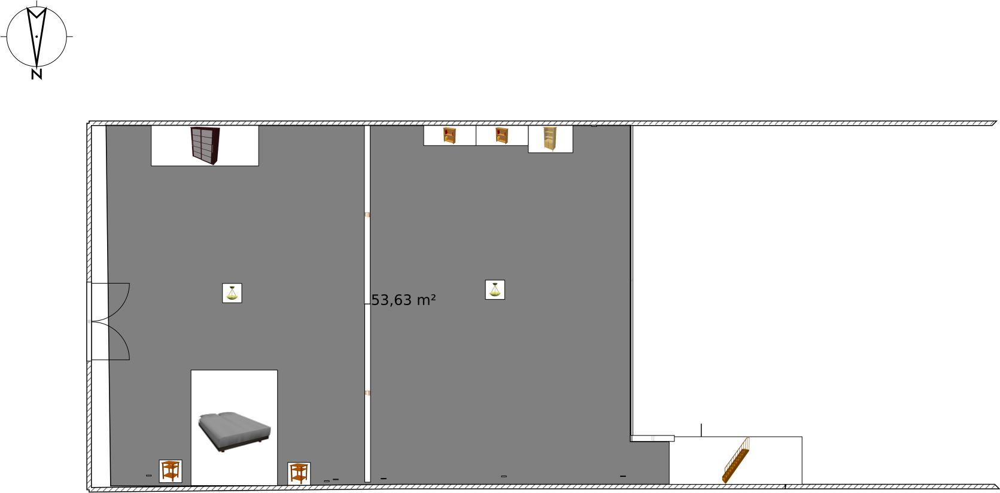
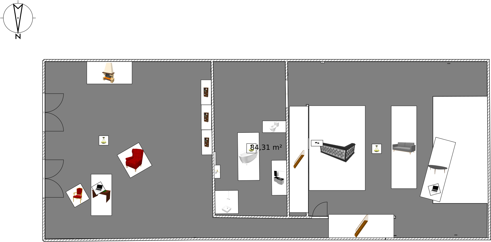

Plan des combles : partie haute

Plan des combles : partie basse

Combles : besoins électriques
vidéo : Les petits boitiers noirs représentent des interrupteurs ou des prises, selon leur altitude :